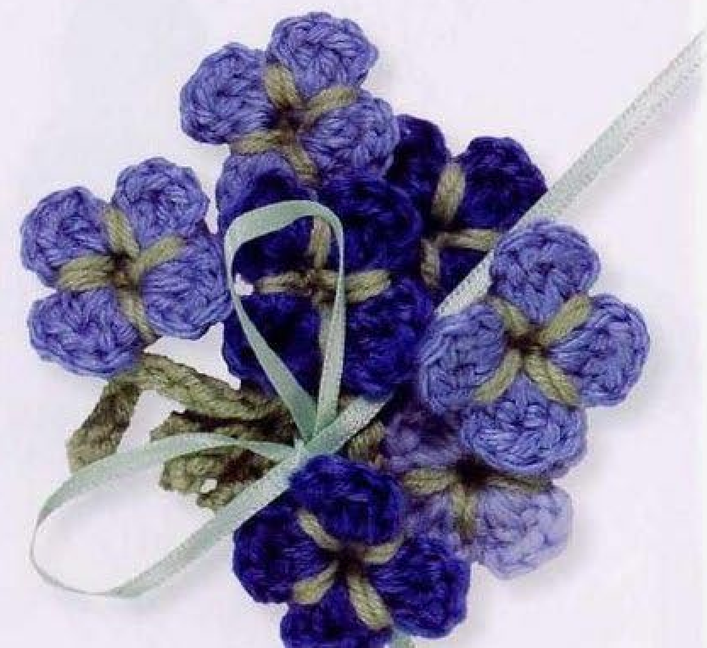
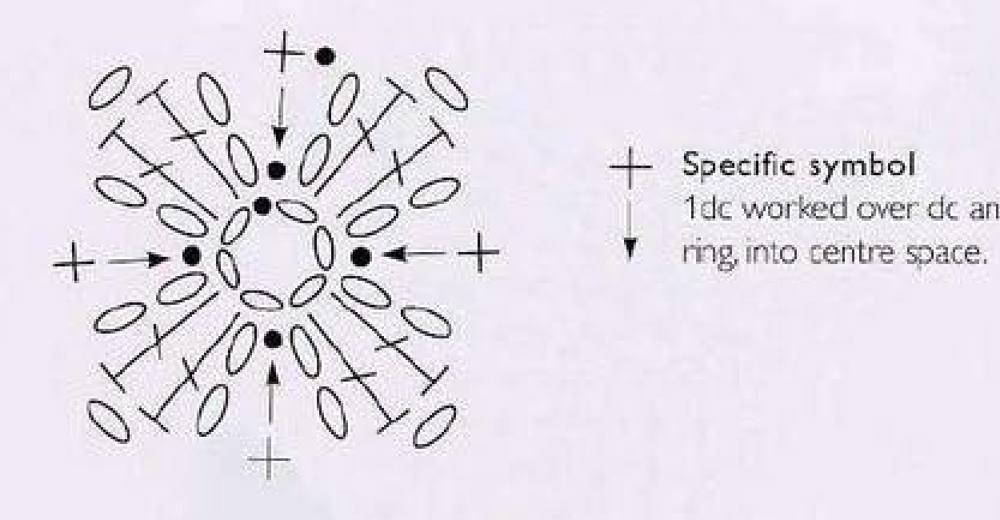
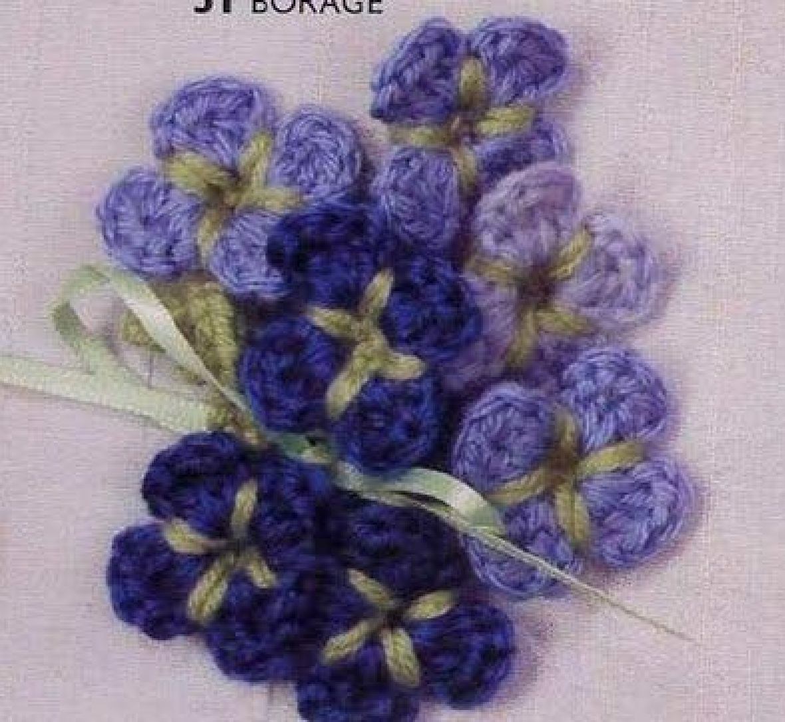

Crochet Borage in this source is a small four-petal wool flower with pale green stitches between the blue petals and a short chain stem. Pattern 51 in Lesley Stanfield’s 100 Flowers to Knit & Crochet asks you to make seven flowers in shades of blue. This guide retains that recipe, explains it in US terms, and includes the original chart and finished bouquet photographs.

Key Takeaways
- Use DK wool in shades of blue A and pale green B.
- Make seven flowers for the source arrangement.
- Each flower begins with a six-chain ring and four blue petal repeats.
- Green sc stitches reach between the petals into the foundation ring; short chains run behind the petals.
- A ten-chain green stem completes each flower.
CROCHET BORAGE FLOWER PATTERN
Project: Seven small blue wool flowers, each with four petals, pale green accents, and a chain stem. Directions preserve the source construction in US terminology. Ribbon arrangement and decorative-use ideas are styling suggestions; dimensions, hook, gauge, and yarn quantity are not specified in the entry.
| Skill level | Not specified. Practical guidance: familiarity with double crochet, single crochet, ring starts, and working behind petals is helpful. |
|---|---|
| Base size | Make 7 flowers. Each has 4 petals and a 10-chain stem. Finished measurements are not given. |
| Yarn | DK wool: shades of blue A and pale green B. |
| Quantity | Not specified. Allow enough blue and green to complete all seven flowers. |
| Hook and gauge | Not specified. Choose a hook appropriate for the wool and assess one sample first. |
| Notions | Scissors and a blunt yarn needle. Ribbon is optional styling seen in the source photograph, not part of the stitch recipe. |
| US abbreviations | ch = chain; dc = double crochet; sc = single crochet; sl st = slip stitch; RS = right side. UK tr = US dc; UK dc = US sc. |
| Foundation | With blue A, ch 6 and sl st into the first chain to join a ring. |
| Round 1 (RS) | Work ch 2, 2 dc, ch 2, sl st into the ring four times. Each repeat makes one petal. Count 4 petals. Fasten off blue. |
| Round 2 | With pale green B, join between petals. Repeat sc between the petals and into the foundation ring, ch 1 behind the next petal four times. The sc passes over the intervening join and ring into the center space, as shown by the chart’s specific symbol. |
| Stem and finish | Sl st into the back of the first green sc, then ch 10 for the stem. Fasten off invisibly. Repeat the full flower recipe to make seven flowers. |
Understand the Four-Petal Source Design
The source flower has four blue petals, even though the finished arrangement contains seven separate flowers. Keep those two counts distinct. Four is the number of petal repeats in each first round; seven is the number of completed flowers requested for the arrangement. Adding seven petals to one ring would produce a different motif.
The blue round is worked entirely into a shared six-chain ring. Each petal has chain-two sides and two US double crochet stitches between them. A slip stitch into the ring brings the repeat back to the center before the next petal begins. The green round is added afterward between and behind the completed petals.
The pale green accents are visible between the blue lobes. They are not a separate yellow flower center or a new layer of blue petals. The chart shows the green stitches reaching into the center ring while short chains travel behind each petal. This placement creates the characteristic green spokes without covering the blue petal faces.
Prepare Blue Shades and Pale Green Wool
Use DK wool in shades of blue for A and pale green for B. The source photographs combine lighter and darker flowers in one small arrangement. You can distribute the blue shades among the seven flowers while retaining the same petal recipe. The instructions do not require changing shade halfway around an individual flower.
Choose yarns of comparable thickness so the green round fits comfortably behind the blue petals. The entry does not specify a brand, hook size, gauge, exact quantity, or finished diameter. Make one flower first if you want to compare materials before producing the full set. Assess both its face and the way the green stitches sit on the back.
Keep scissors and a blunt needle ready for finishing. You will fasten off blue after the petal round and join pale green separately, so do not carry the blue yarn as an additional green strand. A removable marker can help identify the first green stitch for the closing slip stitch into its back.
Source quantities: The pattern requests seven flowers but does not give yarn yardage or grams. The pictured ribbon is decorative styling, not a required crochet component or an additional stitch instruction.
Translate the UK Terms and Use the Specific Symbol

The source uses UK treble for the blue petal bodies. That becomes US double crochet, written dc here. The green UK double crochet becomes US single crochet, written sc here. Chains and slip stitches keep the same meanings. Keep the translations consistent so the green stitches remain shorter than the blue petal stitches.
The chart includes a specific symbol for the green placement. Its stitch is worked over the underlying join and foundation ring into the central space. This is more than an ordinary stitch into a neighboring stitch top. Place the hook between petals and into the ring as shown, so the green yarn reaches toward the flower center.
The chain-one connections in the green round lie behind the petals. They should not become a green outline across each petal’s front edge. Use the diagram and finished photograph together: the chart explains the route, while the photograph helps you recognize the green accents between the four blue petals.
Step 1: Join the Blue Foundation Ring
With the chosen blue shade A, chain six. Check the chain for twists, then slip stitch into the first chain to form a ring. Hold the ring close to the join and keep the opening clear. The petal stitches and their closing slip stitches are worked into this opening rather than separately into six foundation-chain tops.
The ring start is part of the original recipe. A magic-ring replacement would be an adaptation, and closing its opening tightly could affect the later green stitches that need access to the center. Keep the source foundation for a reference-based flower. If the ring is awkward to work into, review chain tension before changing its length.
Step 2: Work the First Blue Petal
With the right side facing, chain two. Work two US double crochet stitches into the ring. For each dc, yarn over once, insert the hook into the ring, draw up a loop, then draw through two loops twice. Both double crochet stitches belong in the ring and are completed independently; they are not a cluster.
Chain two again, then slip stitch into the ring. This returns the first petal to the center and completes its outline. The two chain-two sections frame the two double crochet stitches. Keep the petal open enough to recognize its body and edges without drawing the final slip stitch so tight that the chains become hidden.
This first petal is already one of the four required repeats. Do not make it as an extra setup unit and then add four more. The written sequence is worked four times total. Count complete petal bodies rather than the individual double crochet stitches when tracking your progress around the ring.
Step 3: Complete Four Petals and Fasten Off Blue
Repeat chain two, two double crochet into the ring, chain two, and slip stitch into the ring three more times. You now have four petals. Each contains two worked dc stitches, so there are eight actual blue double crochet stitches across the four petal bodies. The side chains and ring joins are separate parts of the repeats.
Move the completed petals gently around the foundation if they are crowded near one point. Keep all four visible before deciding that a repeat is missing. The ring should support a compact four-lobed flower with spaces between the petal bases. Those between-petal locations will receive the pale green stitches next.
Fasten off blue after the fourth petal, as the source directs. Leave enough end to secure later without creating a bulky knot in the center opening. Do not begin a fifth petal or add another blue round. The green round is a separate color join between petals rather than a continuation of the blue yarn at the same point.
Petal checkpoint: Four complete repeats give four petals and eight worked US double crochet stitches. The source does not use clusters or a fifth petal in this first round.
Step 4: Join Pale Green Between the Petals
With pale green B, join the yarn between two blue petals. Identify the foundation ring beneath that gap. The green single crochet reaches through the gap into the ring, passing over the existing join area as indicated by the chart’s specific symbol. Work it into the center space rather than merely catching the top of a blue stitch.
To form the green sc, insert the hook through the indicated between-petal route into the ring, draw up a loop, then yarn over and draw through both loops. Keep the stitch long enough to sit across that short distance without pulling the blue petals together sharply. Its visible part creates a green accent between the neighboring lobes.
After the sc, chain one behind the next petal. Carry that short connection around the back to reach the following gap. The chain is not a new petal or a stem branch. Gently lift the petal if necessary to keep the green connection out of the front view while finding the next ring placement.
Step 5: Complete the Green Round
Repeat the between-petal sc into the ring and the chain-one connection behind the next petal four times total. Each of the four gaps receives a green stitch, and each petal has a short green connection behind it. Keep the blue petals free while moving around the flower so a connection does not cross a petal face accidentally.
After the fourth repeat, slip stitch into the back of the first green single crochet. This is the closing placement specified in the source. Identify the first green stitch itself rather than closing into a blue ring join or the front of a petal. A marker can help you find it without guessing among the small stitches.
Check the face before making the stem. You should have four blue petals with pale green accents between them and no new yellow center. Turn the flower and inspect the green connections behind the petals. Correct any front-crossing chain before fastening off, because it is easier to adjust the route while the yarn is still active.
Front Accents, Back Connections
The green sc placements are visible between petals, while the chain-one connections travel behind the petals. Keeping those roles separate preserves the source appearance without adding a green border around each blue lobe.
Step 6: Make the Ten-Chain Stem
After the green closing slip stitch, chain ten for the stem. The source does not instruct you to work back along these chains with slip stitches. This is a chain stem, unlike some other flower recipes in the book that explicitly add a worked-back return. Keep the distinction when making a source-based Borage sample.
Fasten off invisibly, as directed. Secure the green and blue ends carefully on the back without pulling the chain stem shorter or closing the center into a hard knot. Keep the end treatment tidy enough that it does not become a bulky extra leaf shape. The entry does not give a separate leaf recipe.
Set the completed flower down and inspect all four petals, the green between-petal accents, and the short stem. Make any gentle arrangement adjustments before trimming final ends. The source gives no pressing temperature or blocking measurement for this flower, so additional shaping choices should follow your yarn’s care requirements and a tested sample method.
Repeat the Recipe to Make Seven Flowers
Make six more flowers using the same foundation, four-petal round, green round, and chain stem. Use the selected blue shades across the set if you want an arrangement similar to the photograph. Count finished flowers separately from petals: seven completed flowers should each have four petals, rather than one large flower with seven petals.
Compare the first few samples before completing the entire group. Consistent yarn thickness, hook, and tension help them sit together, even if their blue colors differ. Record the materials you used if you want a second matching set. The pattern does not supply a graded size system, so measure your own completed sample when planning placement.

Troubleshoot the Green Route and Petal Shape
Why is there a green line across the petal face?
Check the chain-one route after each green sc. It should pass behind the next petal to the following gap. If it crossed the front, undo that section and reroute it before closing the round. Do not cover the misplaced line by adding another blue petal layer, because that would change the original construction.
Why is the center pulled into a tight knot?
Inspect tension in the green stitches that reach into the ring and in the finishing ends. The green placement should create visible between-petal accents without dragging all four petals inward. Gently redistribute the blue stitches around the ring, then adjust unfinished green or sewing tension as needed.
Why does my stem look heavier than the source?
Confirm that you made only the ten-chain stem. Adding return slip stitches gives it a thicker worked strand, which is not the source direction for Borage. Yarn thickness can also affect the look. Check the written construction before changing the chain count or adding a separate stem component.
Arrangement, Ribbon, and Decorative Uses
The source photographs arrange the flowers together and include a narrow ribbon. The written stitch recipe does not prescribe ribbon length, tying method, or a sewn bouquet base. Treat those choices as decorative styling. Arrange the completed stems loosely and check that a ribbon does not crush the petals or hide the pale green details.
Additional suggested uses include a grouped applique on a bag or fabric panel, or individual small flowers placed as accents. These are practical ideas rather than extra projects supplied with this entry. Attach through stable back points so the petal faces remain clear. Plan the spacing with finished samples before committing to permanent sewing.
Variation guidance: Different blue shades can preserve the recipe. A new petal count, extra return stitches on the stem, added leaves, or another petal round should be labeled as an adaptation.
Borage at a Glance
- DK wool in blue shades and pale green.
- Make seven flowers, each with a six-chain ring and four petals.
- Two US dc stitches plus chain-two edges form each petal.
- Green sc reaches into the ring between petals; chain-one connections stay behind.
- Close into the back of the first green sc and make a ten-chain stem.
Conclusion
This Borage design makes a small group of blue flowers from a short repeated recipe. Keep the four-petal count clear, follow the green route through the ring and behind the petals, and finish the simple chain stem without adding an unprinted return. Use the pattern card as a checklist for all seven flowers. Click the Pin to return to the recipe, chart, and finished arrangement photographs.
Source and Tags
Source: Lesley Stanfield, 100 Flowers to Knit & Crochet, pattern 51 Borage, printed instruction page 72 and directory page 32. These are PDF pages 66 and 27 in the supplied scan. Source images show completed arrangements; the ribbon is photographic styling. This guide retains the source recipe in US terminology and identifies added handling and decorative-use suggestions as practical guidance.
Crochet BorageSmall Wool FlowersBlue BouquetFour-Petal FlowersChain StemsCrochet Applique